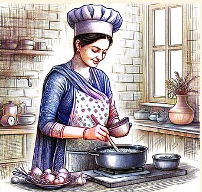

The concept of a home thali encapsulates the essence of home-cooked meals in many cultures, particularly in India. The effort and care put into cooking at home add a sentimental element to the meal. The act of cooking itself can be therapeutic and rewarding, promoting mindfulness and enjoyment.
